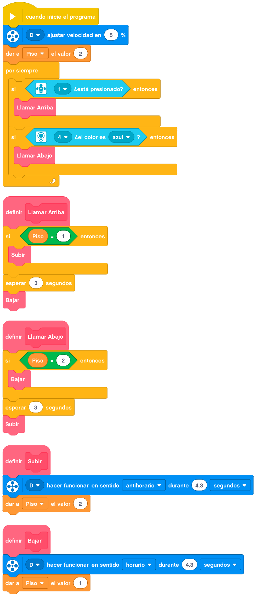

En este tema construiremos un ascensor inteligente.
Vamos a construir un ascensor inteligente con dos plantas.
Para llamarlo a la planta baja, utilizaremos una llave de color para que no pueda subir cualquiera. El
ascensor bajará a la planta baja si no lo está, esperará un momento a que pasemos y subirá a la planta alta.
Si lo llamamos desde la segunda planta, bastaría con pulsar el botón y el ascensor subirá a la segunda planta
si no lo está, esperará un momento a que pasemos y bajará a la planta baja.
A continuación, mostraremos un ejemplo de construcción de un ascensor.

Le añadimos el cableado y tendríamos el ascensor terminado.
En este caso la programación podría ser de esta forma.

Nuestro ascensor terminado funcionaría de la siguiente forma.